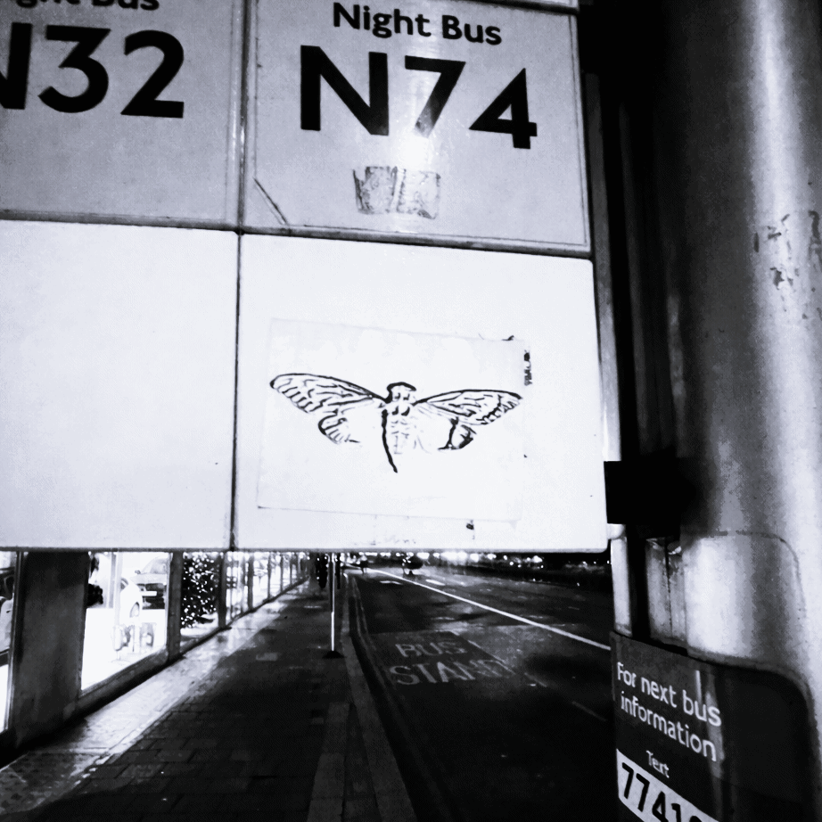

Affinità (2002) is a producer, selector and philosophy postgraduate based in Milan whose assemblies operate between electronic music and hauntology. Profoundly dedicated to the promotion of underground movements, since 2022 Affinità has been committed to the unaffiliated Wish network, the collective epicenter of soundsystem crews and subversive social efforts in the metropolitan Florence area. At the decks, his hybrid sets are curated with an improvisational edge, blending bass-heavy genres (Dubstep, Halfstep DnB) with lush and melodic overtones (Ambient, Soundtracks). Affinità was soon recognized for his signature sound by the wider urban scene, and now hosts his own radio show “Ipogeo” on FANGO Radio . He’s nonetheless most frequently off the commercial radar, and found playing alongside acclaimed sound crews, collectives and performers. His production is a distinctive mutation of the Footwork and Breakbeat genres, generally pulsating at 160 bpm, though infused with complex melodic textures, organic drums and the intelligent use of repetitive vocal lines: sampling sits at the heart of his production process, mostly relying on manual chopping and sequencing, layering sounds from old videogames, motion picture soundtracks and dusting libraries from obsolete DAW’s and VST’s. His commercial debut was set off independently by the 4-track EP Massa Elettrica released in early 2025, framing the affect for his subsequent single publications.

Music
Drive
- Bio — EN / IT
- EPK — one-sheet
- Technical rider (DJ)
- Sound_futuro — education programme
- Press photos — high resolution
Press kit
Bio
Affinità (2002) is a producer, selector and ex-philosopher whose assemblies operate between electronic music and cybernetic theory.
+ Full bio
Profoundly dedicated to the promotion of underground movements, since 2022 Affinità has been committed to the unaffiliated Wish network, the collective epicenter of soundsystem crews and subversive social efforts in the metropolitan Florence area. At the decks, his hybrid sets are curated with an improvisational edge, blending Dubstep and Grime with Dancehall, Gqom, Experimental Hip-hop and Footwork. Affinità was soon recognized for his signature sound by the wider urban scene, and was recently hosted by grassroots radio shows including FANGO Radio and LINEA Milano. He's nonetheless most frequently off the commercial radar, and found playing alongside acclaimed sound crews, collectives and performers.
His production is a distinctive mutation of the Footwork and Breakbeat genres, generally pulsating at 160 bpm, though infused with complex melodic textures, organic drums and the intelligent use of repetitive vocal lines: a dextrous sampling technique is at the heart of his production process, mostly relying on manual chopping and sequencing, layering sounds from old videogames, motion picture soundtracks and dusting libraries from obsolete DAWs and VSTs. His commercial debut was set off independently by the 4-track EP Massa Elettrica released in early 2025, framing the sensibility and aesthetic for his subsequent single publications.
Radio & sets
Hybrid sets with an improvisational edge: dubstep and grime against dancehall, gqom, experimental hip-hop and footwork.
- FANGO Radio — guest set
- LINEA Milano — guest set
Education
Sound_futuro
Conceived, developed and artistically directed by Affinità. A modular path of in-person lessons on FL Studio for beginners and advanced students, built as an alternative to learning alone from online tutorials.
Community building, economic accessibility and the promotion of grassroots culture — production taught in a room, together.
Available in Milan for workshops, one-to-one production lessons and programmes with schools, associations and community spaces.
Community
Since 2022 part of the unaffiliated Wish network — the collective epicentre of soundsystem crews and grassroots social efforts in the metropolitan area of Florence.
Member of the core organising team of large-scale popular cultural events and critical-mass mobilisations across Florence and Prato, working alongside the region's autonomous spaces: sound system set-up, harm-reduction practices, communication, food and bar service.
Contact
- Booking & education
- Bandcamp / streaming